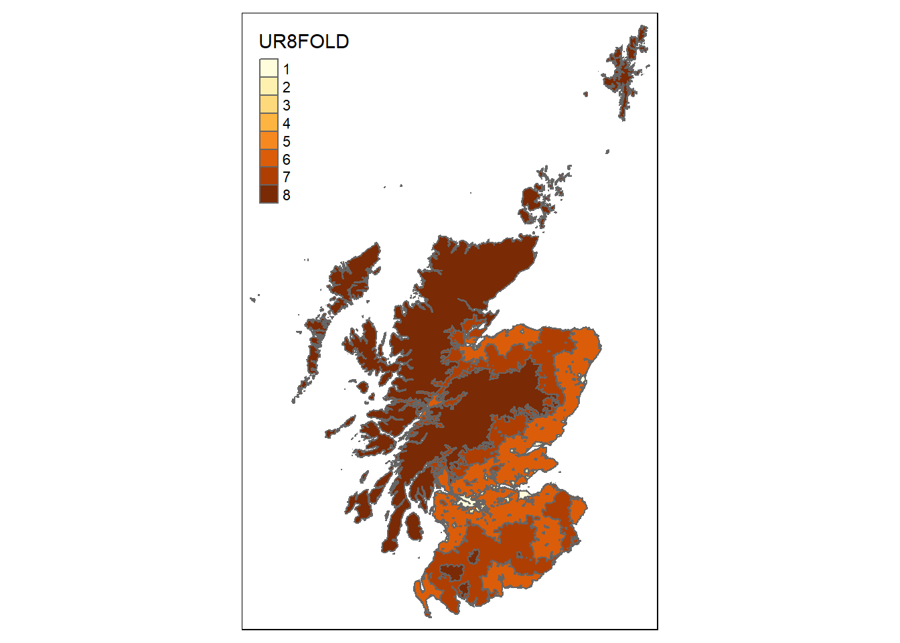
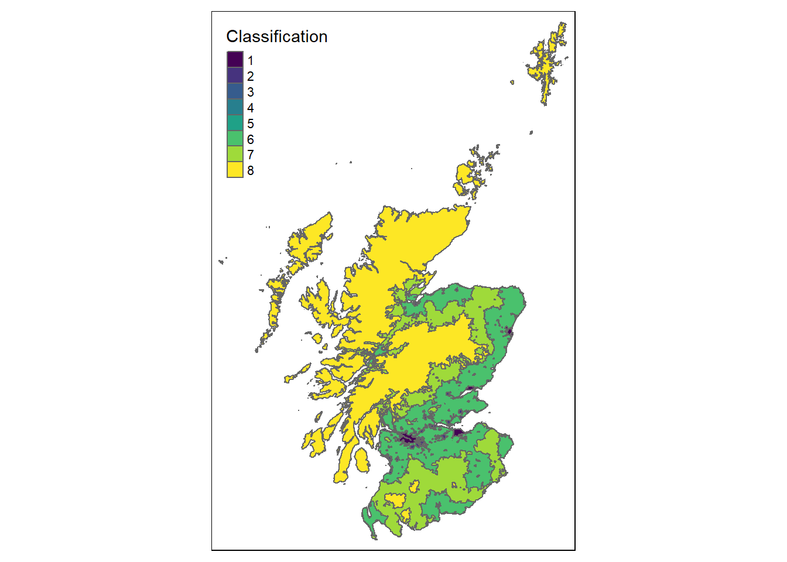
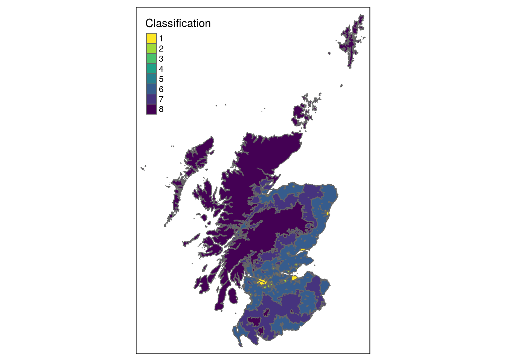

The Scottish Government Rural Classification gives definitions of rural areas within Scotland. As someone who lives (and works) in an area classed as rural I’ve taken more interest in this more recently. I’ve also started working with mapping more in R and so decided to combine the two into a post. As part of the classification Scottish Government provide a shape file to download. We can then load it in.
library(sf)
rural_index = st_read("SG_UrbanRural_2016/",
layer = "SG_UrbanRural_2016", quiet = TRUE)There are several different ways that the classification works. I have chosen to use the 8 fold classification. The table below shows the definitions.
| Class | Name | Description |
|---|---|---|
| 1 | Large Urban Areas | Settlements of over 125 000 people |
| 2 | Other Urban Areas | Settlements of 10 000 to 125 000 people |
| 3 | Accessible Small Towns | Settlements of between 3 000 and 10 000 people and within a 30 minute drive time of a Settlement of 10 000 or more |
| 4 | Remote Small Towns | Settlements of between 3 000 and 10 000 people and with a drive time between 30 and 60 minutes to a Settlement of 10 000 or more |
| 5 | Very Remote Small Towns | Settlements of between 3 000 and 10 000 people and with a drive time of over 60 minutes to a Settlement of 10 000 or more |
| 6 | Accessible Rural Areas | Areas with a population of less than 3 000 people and within a drive time of 30 minutes to a Settlement of 10 000 or more |
| 7 | Remote Rural Areas | Areas with a population of less than 3 000 people and with a drive time of between 30 and 60 minutes to a Settlement of 10 000 or more |
| 8 | Very Remote Rural Areas | Areas with a population of less than 3 000 people and with a drive time of over 60 minutes to a Settlement of 10 000 or more |
To plot the classification, we’ll use the tmap package. This use ggplot2 type syntax and I have found it very straight forward to use. We create a shape and then add the polygons, colouring by the eight fold classification.
library(tmap)
tm_shape(rural_index) +
tm_polygons(col = "UR8FOLD")
As the eight fold classification is numerical it is treated as a continuous variable, which means the colouring is slightly wrong. We can change it to categorical.
tm_shape(rural_index) +
tm_polygons(col = "UR8FOLD", style = "cat")We can also add a different palette and change the label.
tm_shape(rural_index) +
tm_polygons(col = "UR8FOLD", style = "cat", palette = "viridis",
title = "Classification")
tmap also lets you reverse a pallete very easily, simply add a minus sign.
tm_shape(rural_index) +
tm_polygons(col = "UR8FOLD", style = "cat", palette = "-viridis",
title = "Classification")